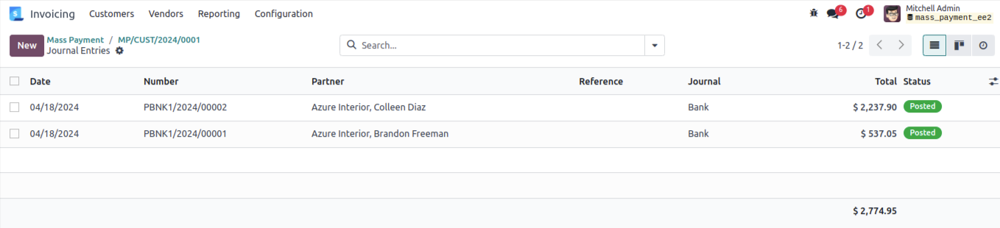

User can generate multiple payments for customer/vendor and can reconcile
directly.
Note: This module is tested and working in Odoo
Enterprise edition but not tested in community version. And we are supporting Ubuntu OS and not Windows
OS.
Generate Mass Payment for selected customer/vendor
invoice.
Manage the Journal Entry for mass payment.
Generate report for mass payment.
How to use
User need to fill appropriate fields and by click on "Create
Payment" button. Draft payments will generate for all due payments. by click on "Confirm" button,
all payments are posted,reconciled and journal entries will be created.
From Invoicing Menu select Customers --> Mass Payment
User need to select following fields.
Company - For which mass payment need to create.
Partner(optional) - For which partner(s) mass payment need to create.
Journal - Which journal is used in all payments.
Number of days old(optional) - field take integer. used for how many old days invoice/bill
fetched for payments.
By clicking on "Create Payment" button. its will create draft payments for all due payments of
customers whose invoices are in "Draft" state.
By Clicking on "Confirm" button. all customer payments
entries will be posted, and journal entries will be created for each. on click "Journal Entries"
button user can see all journal entries.
Select and filter invoices based on selected customer.

Here, We can see impact of customer mass payment on
customer invoice.
User can print report regarding mass payment.
For Vendor Mass Payment
Select Invoicing Menu Select Vendors --> Mass Payment
Same thing to do for vendor mass payments. Here all due
vendor payment will be fetch.
By Clicking on "Confirm" button. all vendor payments
entries will be posted and journal entries will be created for each. on click "Journal Entries"
button user can see all journal entries.
Select and filter bills based on selected customer.
Here, We can see impact of vendor mass payment on vendor
bills.
User can print report regarding mass payment.
Release Update - April 18, 2024 Version - 17.0.1.0.0
Initial Release
NOTE:
We give 60 days support for our customers. Before trying in your live db, please ask us to provide
you for test link. If any other custom modules are installed and because of that some errors occurs
then we charge extra.